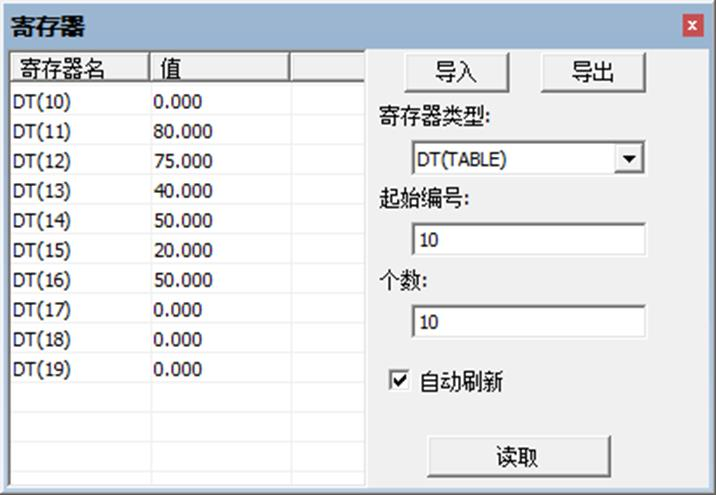

|
类型 |
字符串函数 |
|
描述 |
按照字符串格式打印table里的数据。 数据自动转换，打印出来的数据为ASCII码。 |
|
语法 |
TABLESTRING(index, length) index：打印数据起始地址 length：要打印的数据长度 |
|
适用控制器 |
通用 |
|
例子 |
例一 TABLESTRING(0,5)= "abc" '从tablestring(0)开始保存字符串 PRINT TABLESTRING(0,5) '打印保存的字符串 '打印结果：abc
例二 TABLE(100,68,58,92) PRINT TABLESTRING(100,3) '字符串格式打印数据，转换为ASCII码 '打印结果：D:\
在ZDevelop软件的“视图”-“寄存器”可以查看TABLE寄存器的每个位置的数据。  |